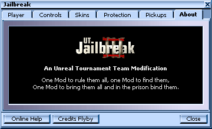

Useful UWindow Extensions/Scrolling Credits
The Scrolling Credits UWindow widget displays your mod credits in a fashion similar to movie credits. You can include text (formatted on a per-line basis) and texture images in your credits. Users can click the scrolling text to temporarily halt it and drag it to manually move it up and down. The control supports clickable links. |

|
Interface
Methods
All AddSomething methods return whether the line or padding was successfully added or not. The latter can happen if the Lines array isn't large enough; simply change its size in its declaration.
- bool AddLineText(string Text, optional byte Font, optional Color Color, optional bool Underline)
- Adds a line of text to the credits, optionally specifying font, color and underlining. If no color is given, the value of ColorDefault is used (at rendering time, so changes of ColorDefault after AddLineText are effective).
- bool AddLineUrl(string Url, optional byte Font, optional string Text)
- Adds a line of text that is displayed as an underlined clickable link, using the color specified in the ColorLink property. The optional Text argument is displayed as the link's title if specified; otherwise the given URL is displayed itself. URLs starting with
www.,ftp.andunreal://are specifically supported, everything else is directly piped through to thestartconsole command. - bool AddLineImage(Texture Image, optional int Width, optional int Height)
- Adds a texture image to the credits in a separate line. Optionally, the size of the displayed texture can be specified; otherwise its natural size is used.
- bool AddPadding(int Padding)
- Adds a padding of the given amount of pixels between the last added line and the next one.
- Clear()
- Clears the credit lines.
- Reset()
- Restarts the animation from before the fade-in.
Properties
You can set the following properties:
- ColorDefault, ColorImage, ColorLink
- Colors for default text, images (if set to anything else than the default, colorizes the textures that are drawn) and link text.
- DelayFade, SpeedFade
- Delay before the text is faded in, and the speed of the fade-in (number of seconds it takes to complete). If SpeedFade is set to 0.0 (zero), the fade-in sequence is skipped.
- DelayScroll, SpeedScroll
- Delay after the fade-in and before the scrolling starts, and the scroll speed (in pixels per second).
Code
The following code was developed by Mychaeel for Jailbreak. Feel free to use and modify, and please give me some credit [sic!] if you do.
// ============================================================================ // UWindowCreditsControl // Copyright 2002 by Mychaeel <mychaeel@planetjailbreak.com> // Free for noncommercial use and modification. // // Displays scrolling credits, both text and textures. // ============================================================================ class UWindowCreditsControl extends UWindowDialogControl; // ============================================================================ // Structures // ============================================================================ struct TLine { var string Text; var string Url; var byte Font; var Color Color; var bool Underline; var Texture Image; var int Width; var int Height; var int Indent; var int Padding; }; // ============================================================================ // Enumerations // ============================================================================ enum EAction { Action_None, Action_Fading, Action_Scrolling, }; // ============================================================================ // Properties // ============================================================================ var() Color ColorDefault; var() Color ColorImage; var() Color ColorLink; var() int OffsetStart; var() float DelayFade; var() float DelayScroll; var() float SpeedFade; var() float SpeedScroll; var() TLine Lines[64]; // ============================================================================ // Variables // ============================================================================ var EAction Action; var EAction ActionPrev; var bool FlagDrag; var bool FlagUpdated; var float Delay; var float Fade; var float Offset; var float OffsetDrag; var int CountLines; var int HeightTotal; var string TextUrlCurrent; // ============================================================================ // AddLineText // // Adds a line of text. // ============================================================================ function bool AddLineText(string Text, optional byte Font, optional Color Color, optional bool Underline) { if (CountLines == ArrayCount(Lines) || Len(Text) == 0) return false; Lines[CountLines].Text = Text; Lines[CountLines].Url = ""; Lines[CountLines].Font = Font; Lines[CountLines].Color = Color; Lines[CountLines].Underline = Underline; Lines[CountLines].Padding = 0; Lines[CountLines].Image = None; CountLines++; FlagUpdated = false; return true; } // ============================================================================ // AddLineUrl // // Adds a clickable Internet address. // ============================================================================ function bool AddLineUrl(string Url, optional byte Font, optional string Text) { if (CountLines == ArrayCount(Lines) || Len(Url) == 0) return false; Lines[CountLines].Url = Url; Lines[CountLines].Font = Font; Lines[CountLines].Color = ColorLink; Lines[CountLines].Underline = true; Lines[CountLines].Padding = 2; if (Len(Text) == 0) Lines[CountLines].Text = Url; else Lines[CountLines].Text = Text; Lines[CountLines].Image = None; CountLines++; FlagUpdated = false; return true; } // ============================================================================ // AddLineImage // // Adds an image. // ============================================================================ function bool AddLineImage(Texture Image, optional int Width, optional int Height) { if (CountLines == ArrayCount(Lines) || Image == None) return false; Lines[CountLines].Image = Image; Lines[CountLines].Width = Width; Lines[CountLines].Height = Height; Lines[CountLines].Padding = 0; Lines[CountLines].Text = ""; CountLines++; FlagUpdated = false; return true; } // ============================================================================ // AddPadding // // Adds padding to the last line. // ============================================================================ function bool AddPadding(int Padding) { if (CountLines == 0) return false; Lines[CountLines - 1].Padding += Padding; } // ============================================================================ // Clear // // Clears the credit lines. // ============================================================================ function Clear() { Lines[0].Text = ""; Lines[0].Image = None; FlagUpdated = false; } // ============================================================================ // Reset // // Resets the scrolling area to its original position, the first line being // just below the bottom of the arena. // ============================================================================ function Reset() { Offset = OffsetStart - WinHeight; if (SpeedFade == 0.0) Action = Action_Scrolling; else Action = Action_Fading; ActionPrev = Action_None; } // ============================================================================ // Update // // Calculates the total height of the credits list, retrieves element sizes and // determines element indents. // ============================================================================ function Update(Canvas Canvas) { local int IndexLine; local float WidthText; local float HeightText; if (FlagUpdated) return; CountLines = 0; HeightTotal = 0; for (IndexLine = 0; IndexLine < ArrayCount(Lines); IndexLine++) { if (Len(Lines[IndexLine].Text) > 0) { Canvas.Font = Root.Fonts[Lines[IndexLine].Font]; TextSize(Canvas, Lines[IndexLine].Text, WidthText, HeightText); Lines[IndexLine].Width = WidthText; Lines[IndexLine].Height = HeightText; } else if (Lines[IndexLine].Image != None) { if (Lines[IndexLine].Width == 0) Lines[IndexLine].Width = Lines[IndexLine].Image.UClamp; if (Lines[IndexLine].Height == 0) Lines[IndexLine].Height = Lines[IndexLine].Image.VClamp; } else break; Lines[IndexLine].Indent = (WinWidth - Lines[IndexLine].Width) / 2; CountLines++; HeightTotal += Lines[IndexLine].Height + Lines[IndexLine].Padding; } Reset(); FlagUpdated = true; } // ============================================================================ // WindowShown // ============================================================================ function WindowShown() { Reset(); Super.WindowShown(); } // ============================================================================ // Tick // ============================================================================ event Tick(float TimeDelta) { if (Action != ActionPrev) { switch (Action) { case Action_Fading: Fade = 0.0; Delay = DelayFade; break; case Action_Scrolling: Fade = 1.0; Delay = DelayScroll; break; } ActionPrev = Action; } if (Delay > 0.0) { Delay = FMax(0.0, Delay - TimeDelta); return; } switch (Action) { case Action_Fading: Fade = FMin(1.0, Fade + SpeedFade * TimeDelta); if (Fade == 1.0) Action = Action_Scrolling; break; case Action_Scrolling: if (!bMouseDown) Offset += SpeedScroll * TimeDelta; break; } } // ============================================================================ // Click // ============================================================================ function Click(float X, float Y) { Super.Click(X, Y); if (Len(TextUrlCurrent) == 0) return; if (Left(TextUrlCurrent, 4) ~= "www.") GetPlayerOwner().ConsoleCommand("start http://" $ TextUrlCurrent); else if (Left(TextUrlCurrent, 4) ~= "ftp.") GetPlayerOwner().ConsoleCommand("start ftp://" $ TextUrlCurrent); else if (Left(TextUrlCurrent, 9) ~= "unreal://") GetPlayerOwner().ClientTravel(TextUrlCurrent, TRAVEL_Absolute, false); else GetPlayerOwner().ConsoleCommand("start" @ TextUrlCurrent); } // ============================================================================ // BeforePaint // ============================================================================ function BeforePaint(Canvas Canvas, float X, float Y) { Update(Canvas); Super.BeforePaint(Canvas, X, Y); } // ============================================================================ // Paint // ============================================================================ function Paint(Canvas Canvas, float X, float Y) { local int IndexLine; local int OffsetCurrent; if (bMouseDown) if (FlagDrag) Offset = OffsetDrag - Y; else OffsetDrag = Offset + Y; FlagDrag = bMouseDown; DrawStretchedTexture(Canvas, 0, 0, WinWidth, WinHeight, Texture 'UWindow.BlackTexture'); OffsetCurrent = -Offset; for (IndexLine = 0; IndexLine < CountLines; IndexLine++) { if (OffsetCurrent + Lines[IndexLine].Height > 0) break; OffsetCurrent += Lines[IndexLine].Height + Lines[IndexLine].Padding; } TextUrlCurrent = ""; Canvas.bNoSmooth = false; for (IndexLine = IndexLine; IndexLine < CountLines; IndexLine++) { if (OffsetCurrent > WinHeight) break; if (Len(Lines[IndexLine].Text) > 0) { if (Lines[IndexLine].Color.R == 0 && Lines[IndexLine].Color.G == 0 && Lines[IndexLine].Color.B == 0) Canvas.DrawColor = ColorDefault; else Canvas.DrawColor = Lines[IndexLine].Color; Canvas.DrawColor = Canvas.DrawColor * Fade; Canvas.Font = Root.Fonts[Lines[IndexLine].Font]; ClipText(Canvas, Lines[IndexLine].Indent, OffsetCurrent, Lines[IndexLine].Text); if (Lines[IndexLine].Underline) DrawStretchedTexture(Canvas, Lines[IndexLine].Indent, Lines[IndexLine].Height + OffsetCurrent - 1, Lines[IndexLine].Width, 1, Texture 'UWindow.WhiteTexture'); if (Len(Lines[IndexLine].Url) > 0 && Clamp(X, Lines[IndexLine].Indent, Lines[IndexLine].Indent + Lines[IndexLine].Width) == int(X) && Clamp(Y, OffsetCurrent, OffsetCurrent + Lines[IndexLine].Height) == int(Y)) TextUrlCurrent = Lines[IndexLine].Url; } else if (Lines[IndexLine].Image != None) { Canvas.DrawColor = ColorImage * Fade; DrawStretchedTexture(Canvas, Lines[IndexLine].Indent, OffsetCurrent, Lines[IndexLine].Width, Lines[IndexLine].Height, Lines[IndexLine].Image); } OffsetCurrent += Lines[IndexLine].Height + Lines[IndexLine].Padding; } if (Len(TextUrlCurrent) == 0) Cursor = Root.NormalCursor; else Cursor = Root.HandCursor; if (OffsetCurrent + Lines[IndexLine - 1].Height <= 0) Reset(); } // ============================================================================ // Color Operators // ============================================================================ static final operator(16) Color * (float Fade, Color Color) { Color.R = byte(FClamp(Fade, 0.0, 1.0) * float(Color.R)); Color.G = byte(FClamp(Fade, 0.0, 1.0) * float(Color.G)); Color.B = byte(FClamp(Fade, 0.0, 1.0) * float(Color.B)); return Color; } static final operator(16) Color * (Color Color, float Fade) { return Fade * Color; } // ============================================================================ // Default Properties // ============================================================================ defaultproperties { ColorDefault=(R=224,G=224,B=224) ColorImage=(R=255,G=255,B=255) ColorLink=(R=64,G=64,B=255) DelayFade=0.5 DelayScroll=2.0 SpeedFade=1.0 SpeedScroll=30.0 }